| 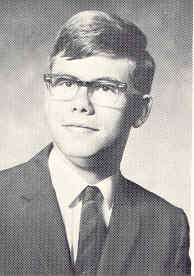 1967 Click for Page Elementary Photo |
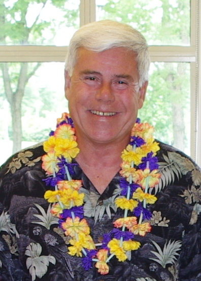 2012 |
| 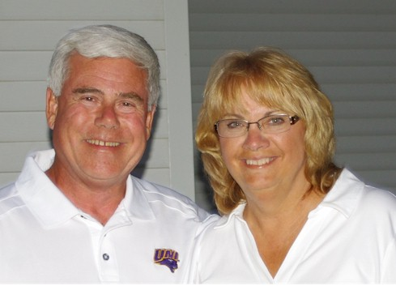 2011 - Tom & Carolyn |
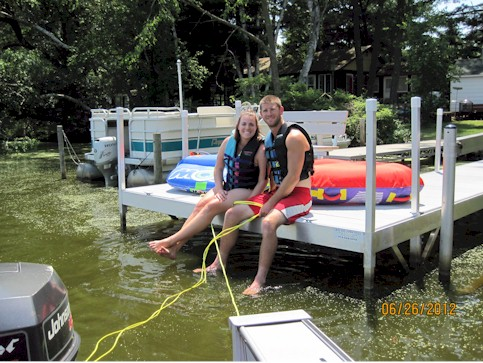 2012 - Alana & Husband Scott |
| 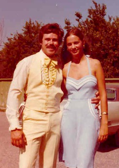 1978 |
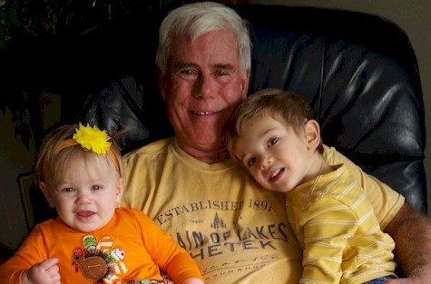 2016 with Ms. Jaide and Master Reis |
| 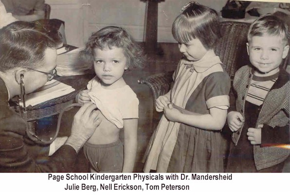 1954 - Page School Physicals |
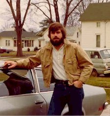 1971 |
| 2002 |
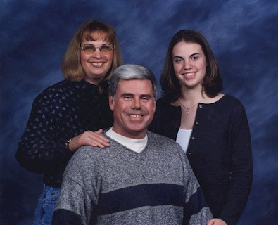 Carolyn, Tom, & Alana |
| 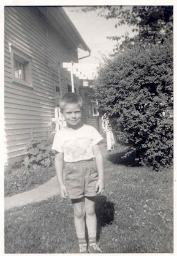 1953? |
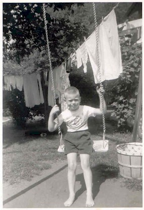 1955? |
| 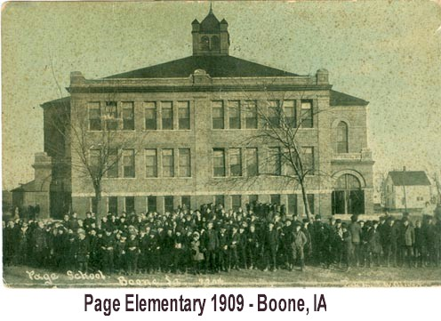 1909 - Page School |
I have been retired almost three years now and don t miss it. As technology changes so rapidly I am now pretty much technologically obsolete which means that trait has caught up with the rest of my abilities.
This past February I had a total hip replacement using the newest Anterior Method and have been doing well. If you are contemplating that consider contacting me for details as I am doing a testimonial for my surgeon. He can actually do it outpatient and though I stayed overnight in the hospital the nurses said I walked over 2 miles that night. Since the replacement I have been able to enjoy walking (this is the only Physical Therapy) and subsequently getting some badly needed exercise. Haven t lost weight but some muscle tone has showed up. Darn, exercise still does work at my age who d a thunk it.
My wife, Carolyn, is working at Universal Industries and still enjoys it though she is starting to talk of retirement. My daughter s family is living 6 blocks from us here in Cedar Falls. Nice to be able to take care of the grand dog whenever necessary and the 4.5 year old boy and 1.5 year old girl are very fun and enjoyable. The both seem to have their grandpa wrapped significantly about their little fingers.
I still enjoy fishing and pontoon rides in Chetek, WI. Have managed to use our cabin there more and more this year. This June my sister and her son s family visited from Monterey, CA. We had a good time though their 5 month old spent most of his time crying but he did learn to use the jumper we have there. This summer has past so quickly.
I have been maintaining our class web site and working with Sue Anderson Mersereau preparing for the reunion. Looking forward to seeing classmates and sharing a good time.
Update 2002:
Went from BHS to Boone Junior College then on to Iowa State University
getting my BS degree in Computer Science. Went to work for Iowa Department of
Transportation in Ames for 11 years then became Associate Director of Administrative
Data Processing at UNI in Cedar Falls in 1982. I have been
at UNI now for 30+ years.
Married my wife, Carolyn, in 1979 and we were blessed with a daughter, Alana, in 1985, and a son-in-law, Scott Berger,
in 2010.
Played fastpitch softball and was inducted into both the Des Moines (1992) and the State of Iowa (1994) Men's Fastpitch Hall of Fames.
My favorite pastime (besides time with my family) is spending time at our cabin in Chetek, Wisconsin where we just relax, eat, fish, pontoon, ski and have a few brewskis and Schnapps by the campfire. I guess my other pasttime has been creating a website for good ole BHS 1967!!!
Occupation: Director of User Services, Information Technology Services University of Northern Iowa
Tom is the Director of Information Technology Services (ITS) User Services at the University of Northern Iowa. He has management responsibility for the public Student Computer Centers, Computer Consulting Center, as well as the technology Support Staff for the university's President and Provost Offices, International Programs, Academic Advising, Academic Learning Center, Compliance & Equity Management, Graduate College, Honor's Cottage, Iowa Academy of Science, IMSEP, International Programs, Institutional Research, ITS-IS, ITS-AD, Liberal Arts Core, Military Science, McNair Scholars, North American Review, Northern Iowan, Office of Academic Assessment, Research and Sponsored Programs, STEM, and UNI-CUE.
Tom came to UNI in 1982 after nearly 11 years with the Iowa Department of Transportation where he progressed through several positions ranging from engineering programmer/analyst to large system designer/implementer of the IDOT's first statewide networked motor vehicle registration system to systems programmer manager of the IDOT's IBM mainframe. At UNI he has held a variety of responsibilities while in positions as Associate Director of Administrative Data Processing (ADP), Associate Director of Information Systems & Computing Services (ISCS), Director of ITS Information Systems, and Director of ITS User Services.